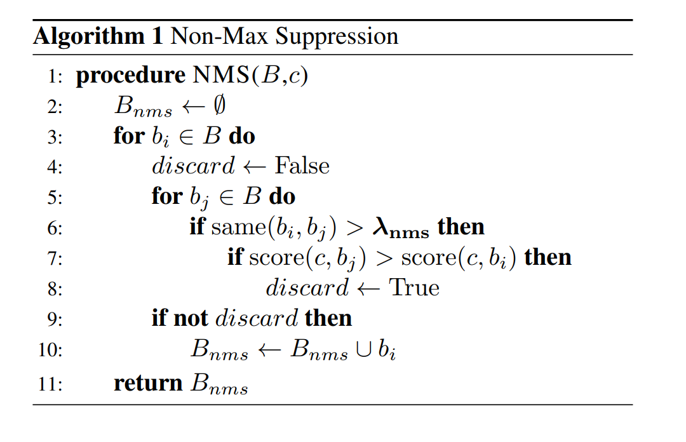
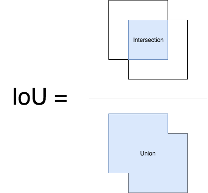
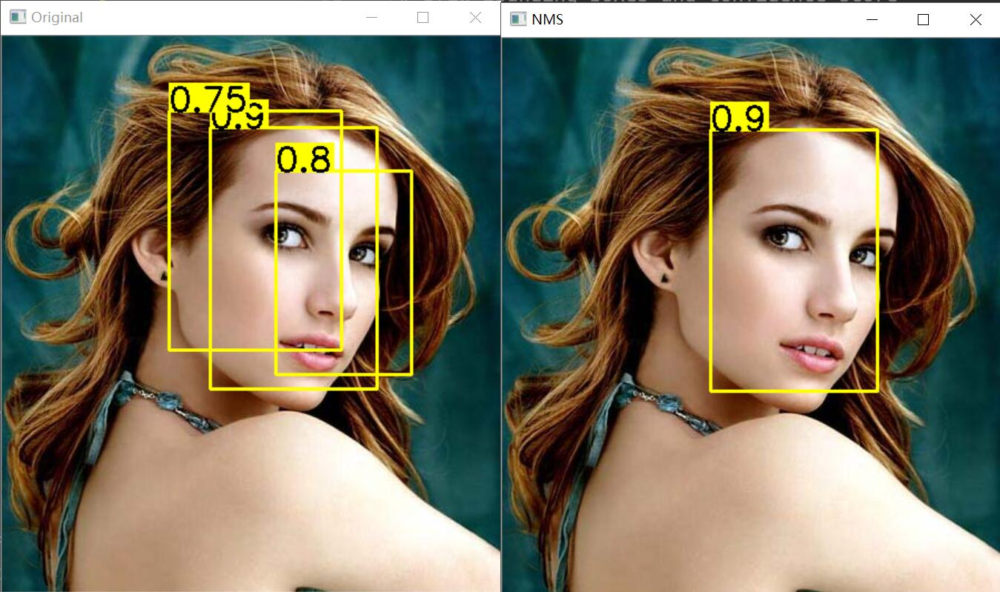
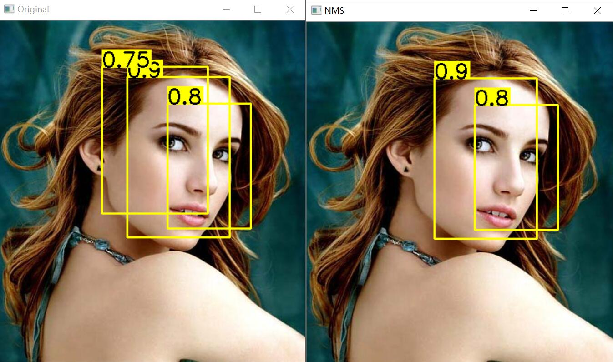

1.Non-max Suppression 流程
Input: A list of Proposal boxes B, corresponding confidence scores S and overlap threshold N.
Output: A list of filtered proposals D.
Algorithm:
- Select the proposal with highest confidence score, remove it from B and add it to the final proposal list D. (Initially D is empty).
- Now compare this proposal with all the proposals — calculate the IOU (Intersection over Union) of this proposal with every other proposal. If the IOU is greater than the threshold N, remove that proposal from B.
- Again take the proposal with the highest confidence from the remaining proposals in B and remove it from B and add it to D.
- Once again calculate the IOU of this proposal with all the proposals in B and eliminate the boxes which have high IOU than threshold.
- This process is repeated until there are no more proposals left in B.
以下是NMS的伪代码：

2. IoU计算方式
IoU即，Intersection over Union

3.Python实现
代码参考值自https://zhuanlan.zhihu.com/p/374890431
2
3
4
5
6
7
8
9
10
11
12
13
14
15
16
17
18
19
20
21
22
23
24
25
26
27
28
29
30
31
32
33
34
35
36
37
38
39
40
41
42
43
44
45
46
47
48
49
50
51
52
53
54
55
56
57
58
59
60
61
62
63
64
65
66
67
68
69
70
71
72
73
74
75
76
77
78
79
80
81
82
83
84
85
86
87
88
89
90
91
92
93
94
95import numpy as np
import cv2
def nms(bbxes, conf_scores, threshold):
# If no bounding boxes, return empty list
if len(bbxes) == 0:
return [], []
boxes = np.array(bbxes)
scores = np.array(conf_scores)
# 左上角和右下角的左边 (从0开始)
leftupper_x = boxes[:, 0]
leftupper_y = boxes[:, 1]
rightbottom_x = boxes[:, 2]
rightbottom_y = boxes[:, 3]
# 计算每个bbox的区域大小，即面积
areas = (rightbottom_y - leftupper_y + 1) * (rightbottom_x - leftupper_x + 1)
# 开始选择
picked_boxes = []
picked_scores = []
# 增序列
order = np.argsort(scores)
while order.size > 0:
# 取出最大置信度的那个
idx = order[-1]
picked_boxes.append(boxes[idx])
picked_scores.append(scores[idx])
# 计算IOU
x1 = np.maximum(leftupper_x[idx], leftupper_x[order[:-1]])
x2 = np.minimum(rightbottom_x[idx], rightbottom_x[order[:-1]])
y1 = np.maximum(leftupper_y[idx], leftupper_y[order[:-1]])
y2 = np.minimum(rightbottom_y[idx], rightbottom_y[order[:-1]])
# 求交集的大小
w = np.maximum(0, x2 - x1 + 1)
h = np.maximum(0, y2 - y1 + 1)
intersections = w * h
iou = intersections / (areas[idx] + areas[order[:-1]] - intersections)
# 保留下来的bbox
left = np.where(iou < threshold)
order = order[left]
return picked_boxes, picked_scores
# Image name
image_name = 'nms.jpg'
# Bounding boxes
bounding_boxes = [(187, 82, 337, 317), (150, 67, 305, 282), (246, 121, 368, 304)]
confidence_score = [0.9, 0.75, 0.8]
# Read image
image = cv2.imread(image_name)
# Copy image as original
org = image.copy()
# Draw parameters
font = cv2.FONT_HERSHEY_SIMPLEX
font_scale = 1
thickness = 2
# IoU threshold
threshold = 0.4
# Draw bounding boxes and confidence score
for (start_x, start_y, end_x, end_y), confidence in zip(bounding_boxes, confidence_score):
(w, h), baseline = cv2.getTextSize(str(confidence), font, font_scale, thickness)
cv2.rectangle(org, (start_x, start_y - (2 * baseline + 5)), (start_x + w, start_y), (0, 255, 255), -1)
cv2.rectangle(org, (start_x, start_y), (end_x, end_y), (0, 255, 255), 2)
cv2.putText(org, str(confidence), (start_x, start_y), font, font_scale, (0, 0, 0), thickness)
# Run non-max suppression algorithm
picked_boxes, picked_score = nms(bounding_boxes, confidence_score, threshold)
# Draw bounding boxes and confidence score after non-maximum supression
for (start_x, start_y, end_x, end_y), confidence in zip(picked_boxes, picked_score):
(w, h), baseline = cv2.getTextSize(str(confidence), font, font_scale, thickness)
cv2.rectangle(image, (start_x, start_y - (2 * baseline + 5)), (start_x + w, start_y), (0, 255, 255), -1)
cv2.rectangle(image, (start_x, start_y), (end_x, end_y), (0, 255, 255), 2)
cv2.putText(image, str(confidence), (start_x, start_y), font, font_scale, (0, 0, 0), thickness)
# Show image
cv2.imshow('Original', org)
cv2.imshow('NMS', image)
cv2.waitKey(0)
代码中尤其需要注意的地方就是w = np.maximum(0, x2 - x1 + 1)和h = np.maximum(0, y2 - y1 + 1),这里之所以要和0相比取最大是因为按照代码x1~x4部分的逻辑，如果两个框根本没有交集，交集则会为负值。
当阈值为0.4时
当阈值为0.5时
